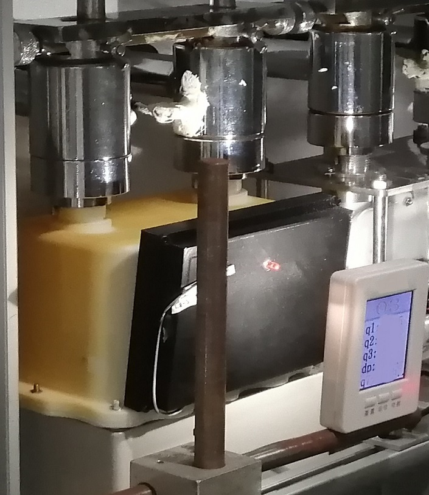
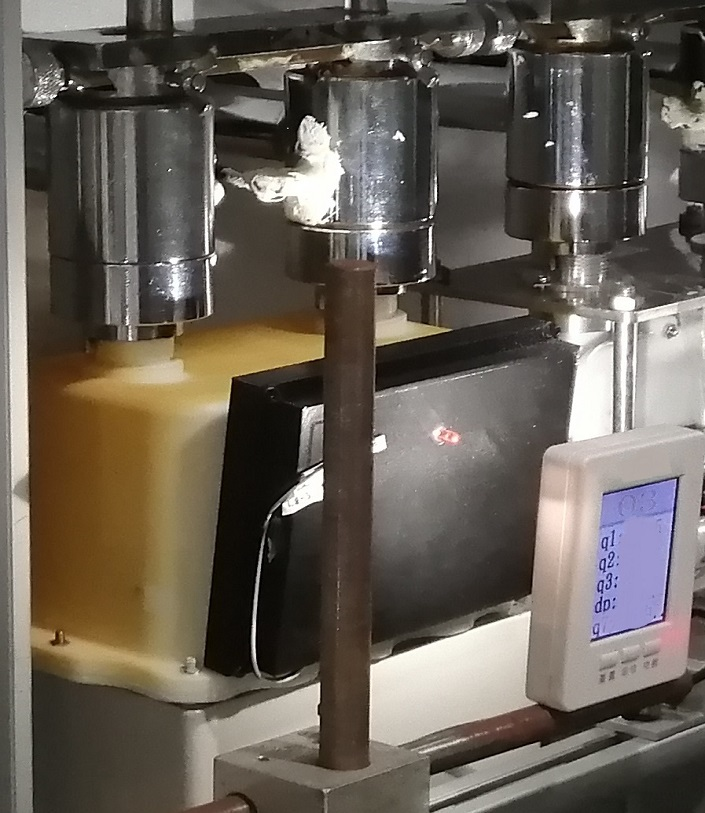

Our largest and longest project so far has been the development of a domestic ultrasonic gas meter. For it, we have worked on the transducer design, the internal components design, electronics components evaluation and programming. As a result, we have produced a fully functional meter prototype that is currently undergoing testing.
 

Working with Birmingham City University, we have developed an ultrasonic air flow evaluation module that will be used to demonstrate one of the uses of ultrasound in biomedical engineering.
We are also currently developing a water and heat meter. At the moment we are testing DN50 prototypes.